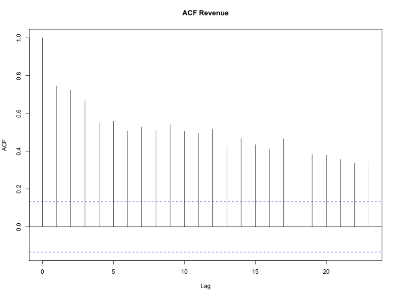
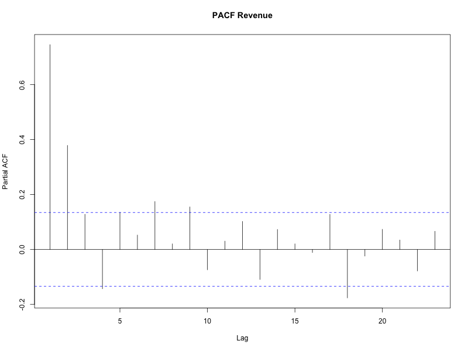
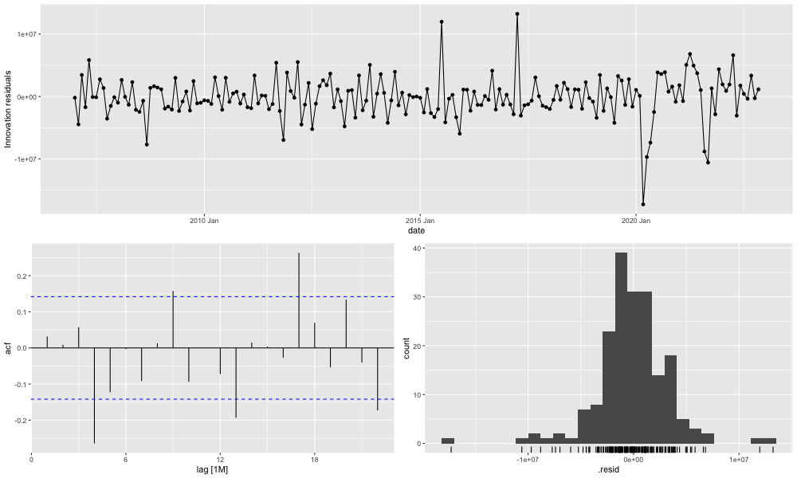
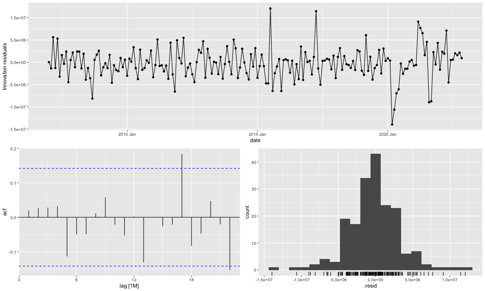
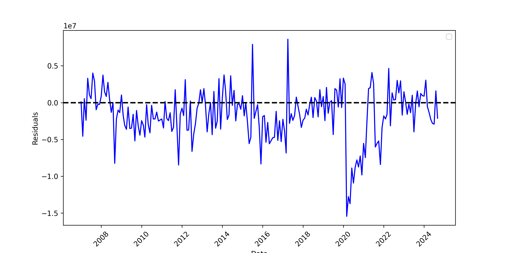
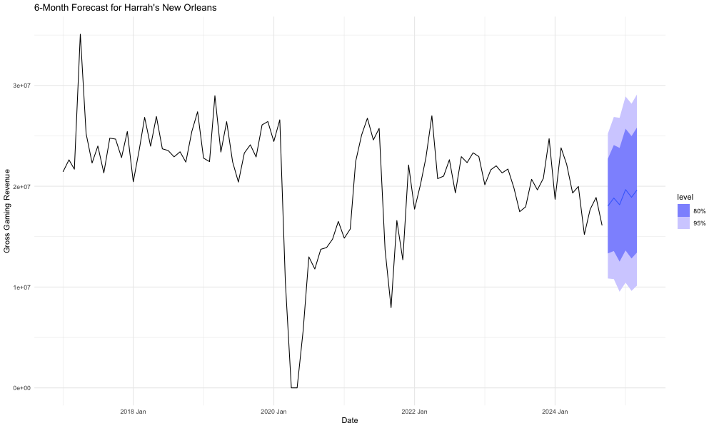

Imputation was done for observed outliers that resulted from two significant drops in revenue. First was the result of COVID lockdowns in 2020. A stay-at-home order was implemented in March 23, 2020 as a result Harrah's monthly revenue in the March of 2020 was 64% less than March of the previous year. Harrah's reported zero revenue for the months of April and May after the lockdowns continued to be in effect. Harrah's reopened when the state transistion to phase 2 of reopening on June 5th, 2020[wikipedia]. In the month of June Harrah's reported a revenue that was 75% less than the same month in the previous year.
In dealing with COVID era data I considered a few options, the simplest being keeping the COVID era data, removing it, or imputation. I also considered creating a dummy varaible for pre-COVID data and post-COVID data, but the difficulty in that was defining when post-COVID begins. Also, from our data we can see that by the following March 2021, it had returned to pre-lockdown revenues until there was dramatic dip again starting August of 2021. This was likely due to hurricane Ida which caused widespread power outages, wind damage, localized flooding. Many residents decided to evacuate the area before the storm.
I decided to imputate, the R package 'tsoutliers' automatically detects outliers and suggests values for replacement. The function determined revenues in April 2020 and May of 2020, both zero, to be the only outliers and suggested replacements. Figure 2 is the data after imputation.
All models except prophet was done in R. The prophet model was built using python programming. In order to use the ARMA model the data needs to be stationary, where the mean and variance is constant across time and autocovariance, which is the difference between values at different time lags depends on the lag and not the specific time. An Augmented Dickey-Fuller test, ADF test, was conducted on the imputed and logged data to check for stationarity. The following is the result of our ADF test.
| Dickey-Fuller | Lag Order | P-Value |
|---|---|---|
| -4.7 | 5 | 0.01 |
Our test statistic tells us how far the data is from a unit root. A unit root is a stochastic trend in a time series that indicate that a value will be highly dependent on its past values, the presence of a unit root indicates that it is non-stationary. The negative number suggests that it further far a unit root. Our alternative hypothesis is stationarity, our p-value is <0.05 so we can reject the null-hypothesis which is that it is non-stationary.
An ACF plot however shows a more gradual decline to zero which suggests non-stationarity. When the data is differenced an ADF test still the ACF no longer suggests non-stationarity, however the PACF still has several significant spikes.
Figure 5
Figure 5
The autocorrelation function, acf, plot shows suggest that an autoregressive, AR, model may be appropriate. The partial autocorrelation function, PACF, plot suggests that it may be of order 1 or higher. The autocorrelation function, acf, plot shows suggest that an autoregressive, AR, model may be appropriate. The partial autocorrelation function, PACF, plot suggests that it may be of order 1 or higher. The ETS and Prophet models do not require stationarity, as it models trends, seasonality and other non-stationary underlying structures directly. So an ADF test is no necessary.
The first training set is composed of 90% of our data and the test set is the remaining 10%. Cross validation was done by creating multiple training sets from the training set. The first training set will to forecast each subsequent data point, the next training set will add the next datapoint in the series creating a data set of 171 observations, the next 172, and so on. Forecast accuracy is computed by averaging over the test
Horizon: 1-month
| Model | RMSE | MAE | MAPE |
|---|---|---|---|
| Mean | 5,301,099 | 3,701,840 | 26.87% |
| ARIMA | 5,071,280 | 3,344,302 | 23.78% |
| ETS | 4,588,385 | 2,996,947 | 21.64% |
| Prophet | 4,714,701 | 3,557,216 | 21.80% |
Horizon: 6-month
| Model | RMSE | MAE | MAPE |
|---|---|---|---|
| Mean | 6,215,005 | 4,336,561 | 31.67% |
| ARIMA | 6,677,959 | 4,455,446 | 31.75% |
| ETS | 6,037,209 | 4,060,273 | 30.24% |
| Prophet | 6,018,903 | 5,282,748 | 32.90% |
Horizon: 12-month
| Model | RMSE | MAE | MAPE |
|---|---|---|---|
| Mean | 6,577,880 | 4,609,366 | 33.14% |
| ARIMA | 7,182,500 | 4,845,162 | 33.89% |
| ETS | 6,522,722 | 4,536,396 | 32.82% |
| Prophet | 6,018,903 | 5,282,748 | 32.90% |
In addition to the cross-validation results, I looked at innovation residuals to evaluate these forecasting methods. What we look for are residuals that are uncorrelated which tells us that the models have captured all the information from the data. The other important properties is to see if residuals center around zero which tells us whether the forecast is biased or not.

Figure 8 ETS Residual Diagnosis

Figure 9 ARIMA Residual Diagnosis
For the prophet model, I manually plotted the residuals to inspect for a mean around zero. Figure 10 is the residual plot from the Prophet Model. Apart from the outliers as a result of shocks from COVID and Hurricane IDA it does stay fairly centered around zero for all models.

Figure 10 Prophet Residual Diagnosis
| Model | Ljung-Box Statistic | P-Value |
|---|---|---|
| Mean | 18.91 | 0.00001 |
| ARIMA | 0.07 | 0.78 |
| ETS | 0.19 | 0.66 |
| Prophet | 19.80 | 0.031 |
The following are the results from the model trained using 90% of the dataset and tested using the remaining 10% of the dataset. The test set has 22 observations from December 2022 to September 2024. Across all metrics the prophet model performes the best.
| Model | RMSE | MAE | MAPE |
|---|---|---|---|
| Mean | 2,947,411 | 2,349,928 | 12.78% |
| ARIMA | 2,816,615 | 2,274,886 | 12.30% |
| ETS | 3,992,650 | 3,609,188 | 18.91% |
| Prophet | 2,119,691 | 1,723,205 | 5.52% |
Moving forward using the ARIMA model for a six-month forecast. Figure 11 is a plot of the 6-month forecast for Harrah's.

Figure 11 6-Month Forecast
| Model | Revenu |
|---|---|
| 2024 Oct | 18,028,886 |
| 2024 Nov | 18,830,544 |
| 2024 Dec | 18,164,272 |
| 2025 Jan | 19,670,769 |
| 2025 Feb | |
| 2025 Mar | 19,621,175 |